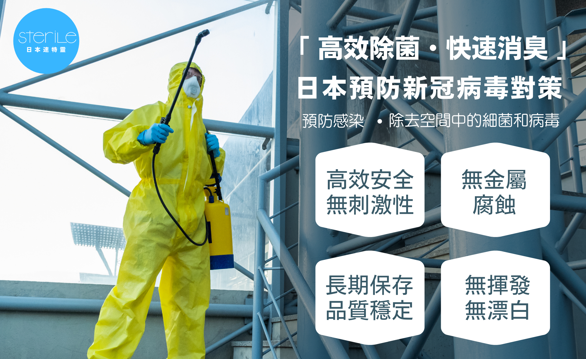
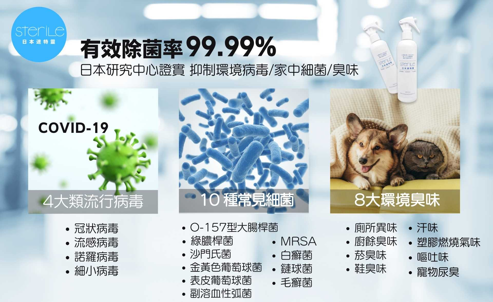
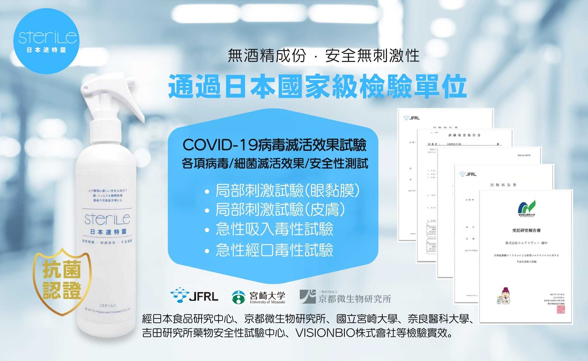

TOYO 日本鹼性離子水生成器團隊,在台灣保建飲水深耕 26 年,服務各大企業、家庭的飲水需求,備受信賴。有鑑於新冠病毒已成國人長期防疫目標,TOYO透過長年來與日本合作夥伴共同研發經驗,獨家代理日本熱銷-【除菌消臭神品-SteriLe 日本速特靈】有效除去空間中的病毒/細菌/臭味,2021 年 8 月強勢登場!
SteriLe 日本速特靈,高效除菌、快速消臭,為台灣各大企業、中小型公司、家庭環境等,提供有效對抗 COVID-19 的解決辦法,通過各項病毒、細菌滅活效果,有效除菌率達 99.99%、成功抑制 COVID-19、流感病毒、諾羅病毒等流行病毒、10 大細菌、8 大臭味等。
SteriLe 日本速特靈使用安定型的次氯酸鈉水溶液製成,優秀的 6 大特性 :無酒精、無揮發、無漂白、無金屬腐蝕、品質穩定、易長期保存,相較酒精、漂白水等同質消毒性商品,已在日本造成熱烈迴響。經日本安全性測試實證,刺激性極低,更是讓應用範圍深入各生活層面,日本地區實際使用單位 :
- JR 電車、新幹線及旗下旅館等交通運輸設施
- 東京大學附屬病院、慶應義塾大學附屬病院等醫療院所
- 資生堂、文明堂、日本肯德機等餐廳、店鋪
SteriLe 日本速特靈已獲日本多個國家級檢驗單位認可,包含 : JFRL 日本食品研究中心、京都微生物研究所、國立宮崎大學、奈良縣立醫科大學、吉田研究所藥物安全性試驗中心等。
方便運用在 : 各大醫療院所、清潔團隊、飯店餐飲品牌中央廚房、店頭小吃商號、交通運輸工具、學術機構、公共建設、寵物診所、家庭環境、幼兒園、月子中心、長照中心、娛樂場所、畜牧產業、農舍、殯葬產業...等場所除菌防疫、清潔消臭。
TOYO 好水團隊期待為台灣防疫出一份力,在推廣日常保健飲水事業同時,與政府一同加強國人的生活環境安全,SteriLe 日本速特靈將會同時推出 :
- 一般: 用 300ml 噴霧瓶、4L 補充瓶
- 商務型: 4L、20L 桶裝
- 更可依照需求客製各品牌獨家 OEM 系列產品
更多 SteriLe 日本速特靈商品資訊歡迎前往 TOYO 網路平台:
官 網 : https://reurl.cc/ZGkm33
樂天商城 : https://reurl.cc/qgRERn
免付費客服中心專線 : 0800-090-881
線上 LINE 客服中心 : https://reurl.cc/qgRERn

SteriLe 日本速特靈
販賣元 · 台灣總代理 TOYO 東洋歐帝克股份有限公司
桃園市桃園區經國路 11 號 6 樓之 1 阿波羅大廈
產品 OEM/商務採購 請電洽: 03-3576268
TOYO 官網 https://www.toyo-autech.com.tw/
FacebooK 粉絲團 https://www.facebook.com/toyoautech